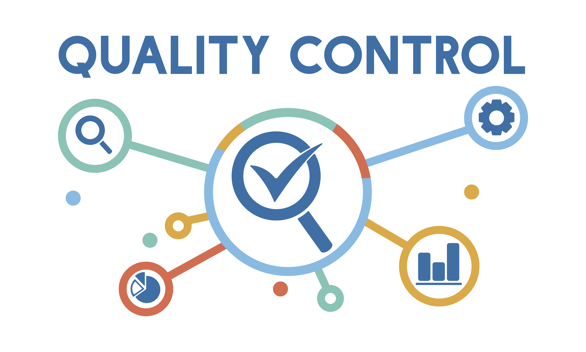

About
HI! My name is Tania and I am QA specialist. As a QA I used to provide customer service by improving quality, reducing problems and bottlenecks, and ensuring that products and services are delivered on time. Effective communication always helped me to support friendly relationships within a team. I started my new life in Canada and understood that it is never late to acquire new knowledge and improve skills, that's why I am taking a course in front and backend development now and at the same time I am working as a Customer Technical Support Specialist in Xerox Company.
Work
QA Experience

As a QA specialist I:
Performed front and backend testing, determined root cause of problems.
Created requirements traceability matrix, summary reports, collected statistical data, and shared information on product quality status with project managers.
Kept requirement documentation up to date and updated Test Plan and Test Strategy.
Communicated within English-speaking environment to help team members to resolve issues and ensure the product met expectations.
Frontend Development Experience
FThis is a timed coding quiz application with multiple-choice questions. It will run in the browser and will feature dynamically updated HTML and CSS powered by JavaScript code.
It is a Web Application which helps User to find different recipes based on the set of ingredients the User has.
Interactive Full-Stack Application it is my first collaborative full-stack project, where a robust back end were combined with servers, databases, advanced APIs, user authentication and intuitive front end.
Interactive full-stack application built with React.js which allows User to upload pictures, share pictures, add comments, description and likes
Contact me
-
Cell:
+1-506-898-08-27
- Email:
-
Telegram:
@tatiana.peutina